Fécamp 2007

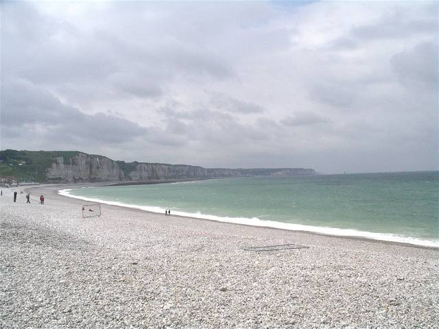
Fécamp, un site magnifique avec vue sur les falaises, une grande plage, malheureusement toute de galets sauf un petit rectangle ensablé pour jouer au beach-volley...

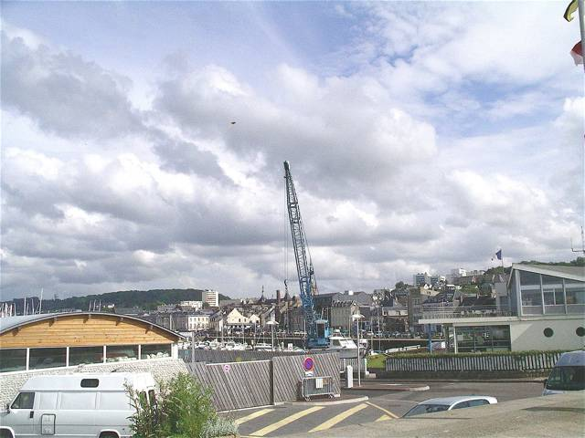
Le vendredi, cerfs-volants des écoles, 240, et tous lâchés d'un coup en fin de manip ! Il y en a encore un accroché à la grue !

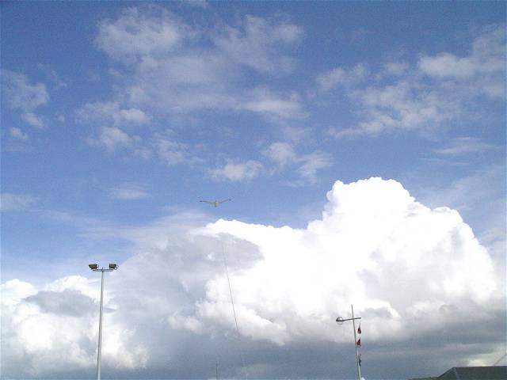
En attendant la nuit, on profite du bon vent de mer et du soleil local pour voler au-dessus des nuées tourmentées qui plombent l'arrière-pays...

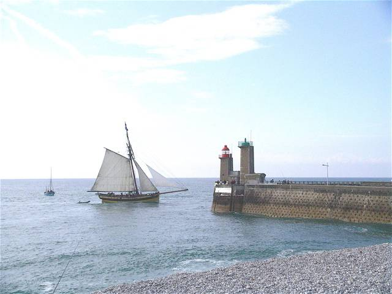
Quelques vieux gréements sont sortis. Le Renard rentre : c'est une copie du bateau de Surcouf, incroyablement petit pour la légende du personnage, mais très voilé, très rapide et très maniable...

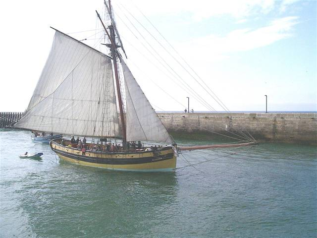
Et il rentre à la voile dans le chenal ! L'immense beaupré devait permettre des voiles d'avant démentielles !

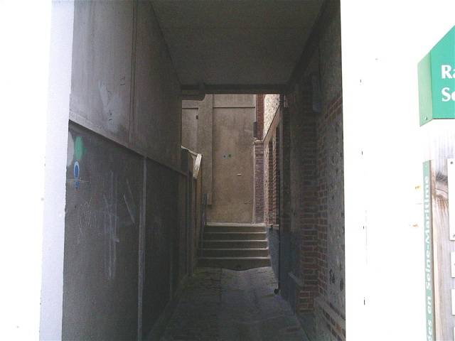
Et le vendredi soir, rassemblement devant la Sente aux Matelots...

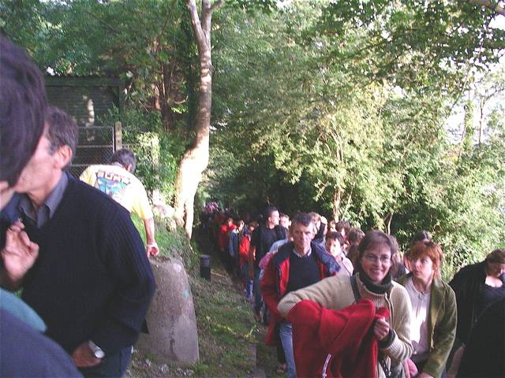
En fait, la sente traverse les (ex)maisons de pêcheurs et monte le versant. C'était le chemin des processions à la chapelle et des marins accomplissant un voeu...

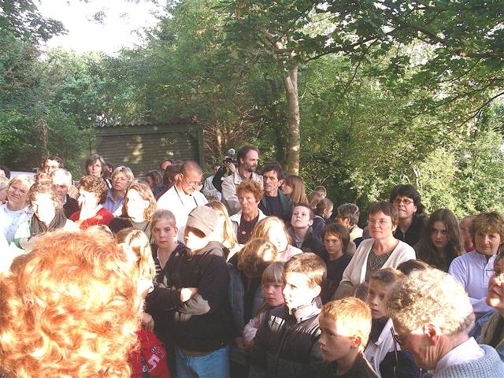
De temps en temps, pause pour écouter une histoire racontée par le guide bénévole, au son du violon...

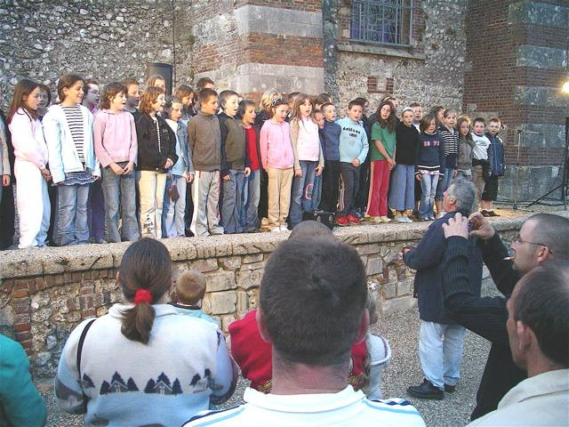
A la chapelle, cérémonie, les enfants chantent des chansons de marin (des cleans), et on lit la liste des "Péris en mer" depuis 25 ans...

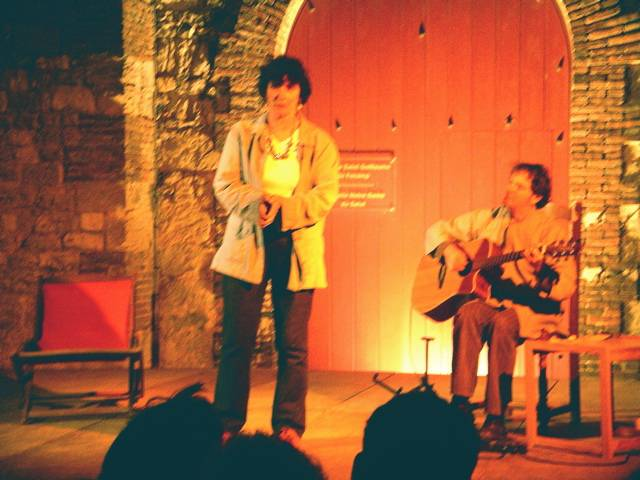
Puis Isabelle Autissier vient, accompagnée d'un bon guitariste, raconter des histoires et faire vivre ses émotions de tour du monde en solitaire... Pas très prenant au début, puis plus intéressant quand elle s'échauffe et revit SES émotions, les couchers de soleil, les dauphins...

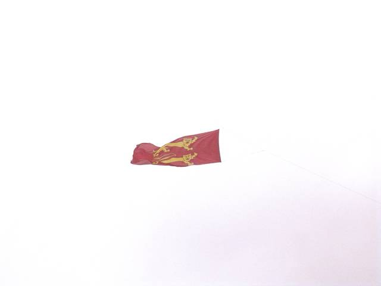
Le samedi, la météo n'est pas bien belle et le vent est plus que costaud. Quelques CVs sortent quand même, pour honorer la Normandie...

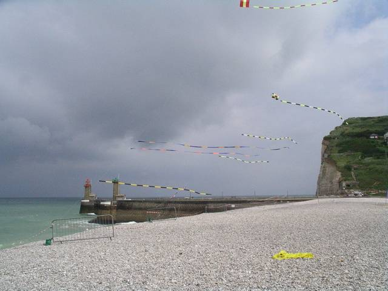
Loïk Lamalle est venu pour la première fois à Fécamp, ses cerfs-volants et ses queues supportent bien ce vent...

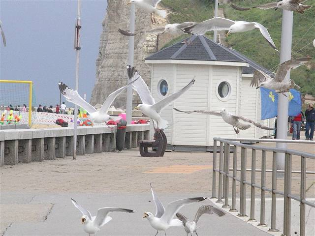
Les mouettes arrivent à faire du stationnaire dans un vent turbulent de 35 km/h... quand on leur jette des bouts de pain !

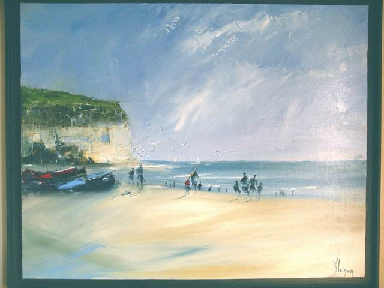
Bon, je vais faire un petit tour du marché Estivoiles. Y a un peintre qui me plaît bien, je l'avais déjà remarqué l'année dernière, bien que je l'aie appelé Meiger au lieu de Kleiner... Bon, je craque, je lui achète une toile, celle avec les mouettes, évidemment...

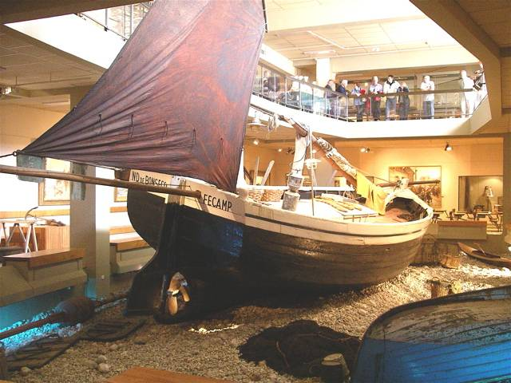
En fin de matinée, participation au pot des équipages, au Musée de la Pêche... On rentre, un bâteau, un vrai, en plein milieu !

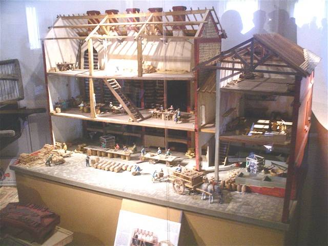
Plein de dessins, de maquettes dont cette saurisserie. Les harengs arrivent en tonneaux, sont dessalés à droite, puis séchés et sauris dans les 5 cheminées qui occupent 3 étages sur tout le mur...

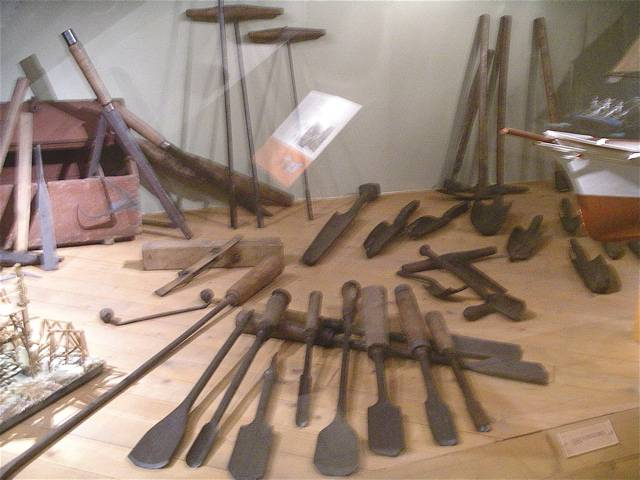
Les vitrines montrent une belle collection d'outils de charpentiers maritimes, de calfats, etc...

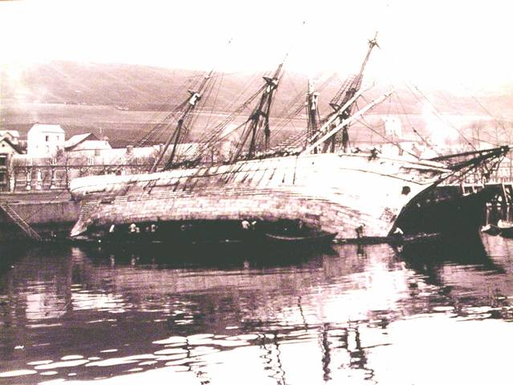
Des photos anciennes racontent le radoub des navires : on les couchait pour doubler la coque de plaques de cuivre !

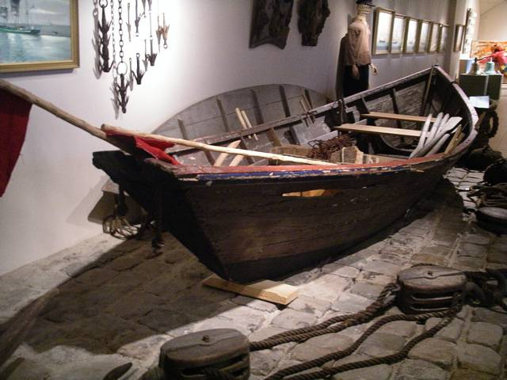
Il y a aussi des doris sur lesquels les pêcheurs s'écartaient du bateau pour tendre les lignes et les relever ensuite, chacun dans la direction affectée pour la campagne...

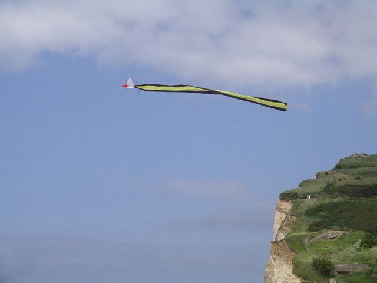
L'après-midi, le ciel se découvre, les cerfs-volants montent comme ce Jangang balinais à la longue queue et deux arcs sonores qu'on entend sur toute la plage, mais ça souffle Force 4...

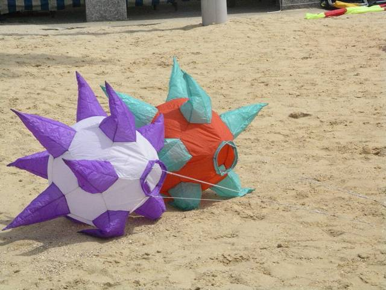
Au sol, des chiens de plage, mais pleins de piquants...

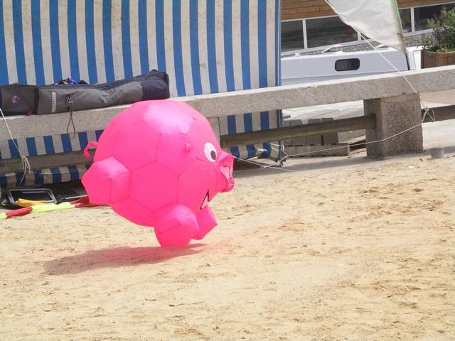
Tout rond, un cochonnet se fait plaisir et gambade dans le vent...

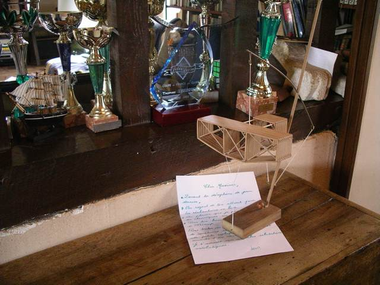
Pendant que je fais ma sieste (en volant, quand même !), Jean Muguet vient m'apporter un trophée qu'il a fait spécialement pour moi pour me consoler d'avoir gagné au concours de création de 2006 un trophée représentant... des pilotables ! Merci Jean, t'es un artiste... au coeur d'or ! Il l'a accompagnée d'une belle lettre calligraphiée que je garderai !

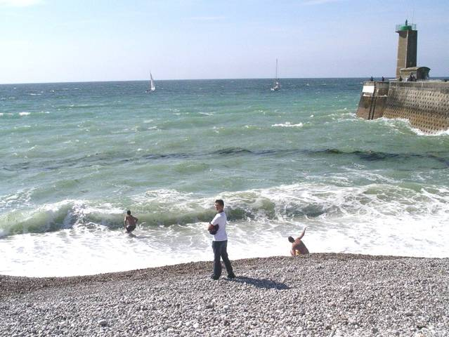
Malgré la météo, des furieux plongent et replongent là où les vagues sont les plus fortes, au pied de la jetée... C'est plutôt de la lutte que du bain, d'ailleurs !

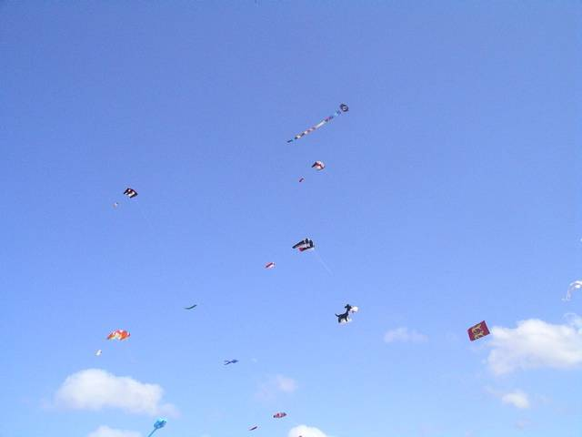
En l'air, il y a quand même de plus en plus de monde. Je casse une aile de mon Albatros2 en le descendant pour améliorer les réglages ! Je cours acheter une canne, je répare, et je pourrai rejoindre les autres, heureusement...

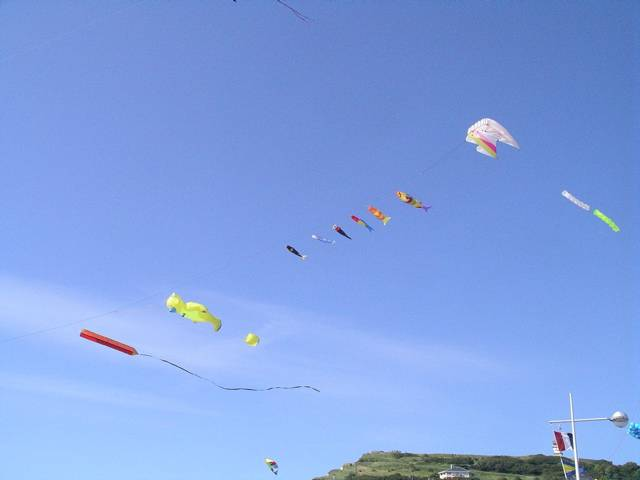
Sous un flow-form aux couleurs délicates, tout un étalage de carpes koï, de nounours etc, il y a du vent pour tirer tout ça !

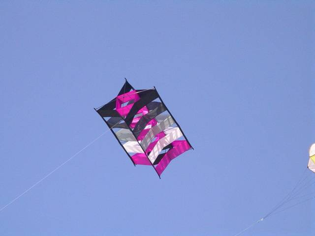
Tof a un joli cellulaire, peu toilé, mais qui souffre un peu quand même...

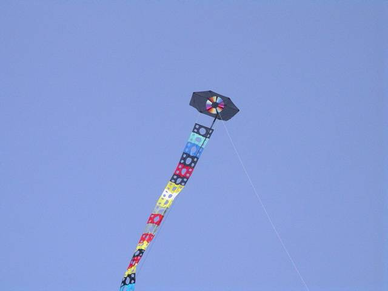
Et Michel Dubuisson, à part ses léopards préférés, met en l'air son appareil photo avec sa pellicule couleur !

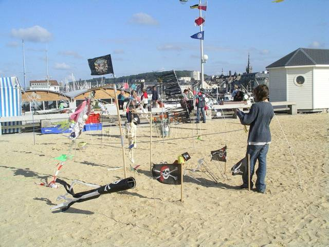
Les Pirates ont intensifié leur présence sur tous les tableaux avec un J. du Vent bien à eux. Drapeaux, squelettes pendus haut et court, rien ne manque...

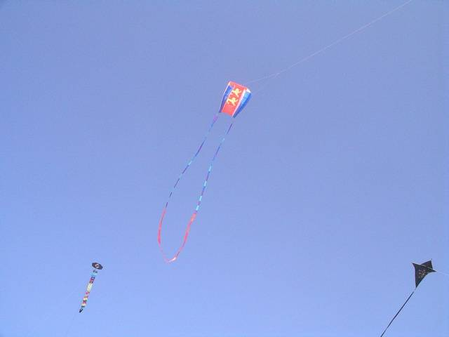
Encore des CVs : celui de Michel, une luge à poche avec les léopards, et un Jessy pirate à la longue queue...

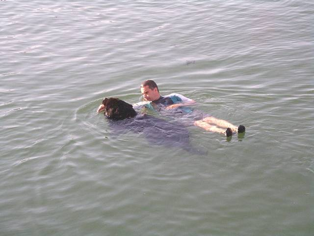
L'année dernière, les Terre-Neuve avaient passé leurs épreuves en mer, avec un enthousiasme mitigé. Cette année, c'est dans le bassin, c'est moins propre, mais plus calme...

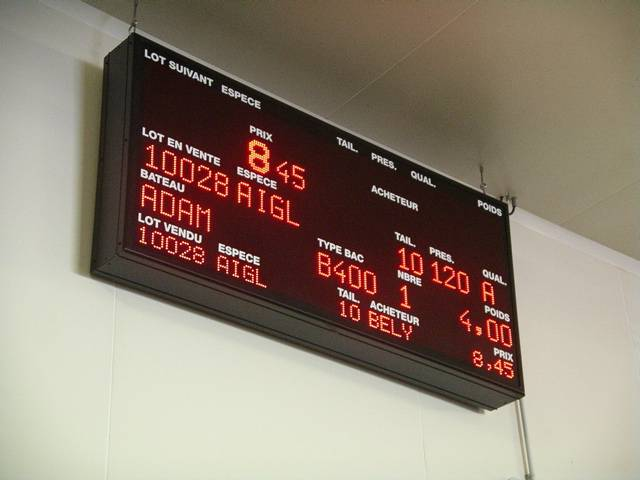
Le samedi soir, repas des équipages, auxquels les cervolistes sont assimilés... Les marins ne le regretteront pas ! Ca se passe dans la criée, heureusement on a vendu tout le poisson...

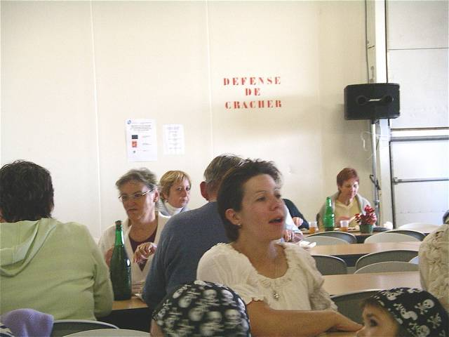
Evidemment, il faut respecter les consignes affichées au mur...

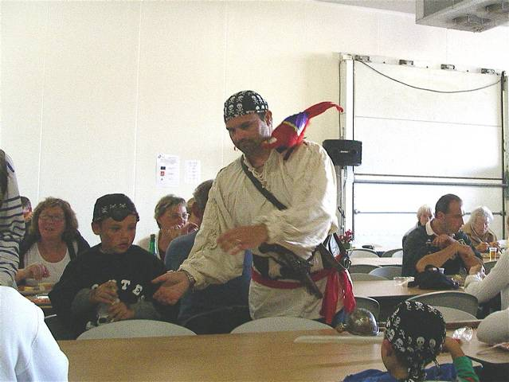
Les Pirates sont habillés... en pirates, les hommes, les femmes, et les enfants !

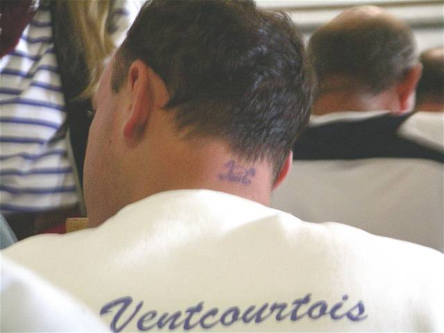
Les Pirates sont remontés et ont plus d'un tour dans leur sac. Sébastien a été marqué de leur sceau...

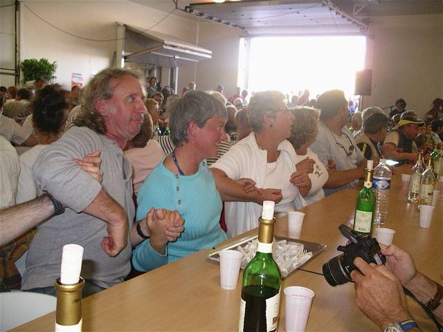
Un bon orchestre met du rythme et de l'animation, on chante en choeur. Mais ils n'ont pas voulu jouer "le loup, le renard et la belette" pourtant entonnés frénétiquement à chaque pause par les cervolistes (surtout William)...

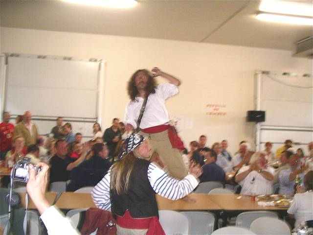
Yves se lâche et joue du pistolet (pas chargé, heureusement), danse, monte même sur les tables...

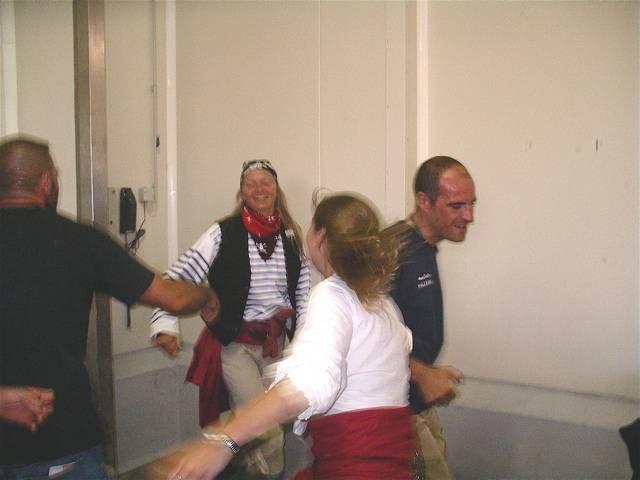
La musique est du genre celtique et entraînante, les piratesses dansent même avec les Gwenn Ha Du...

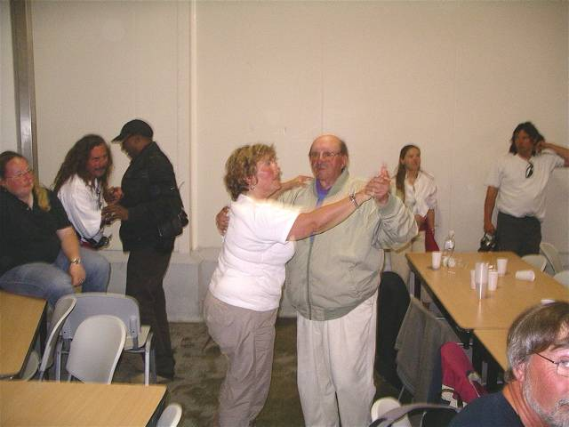
Et même Fernando y va de son tour de valse...

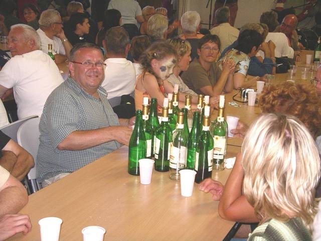
Laurent est plus calme, mais jouit aussi de l'ambiance !

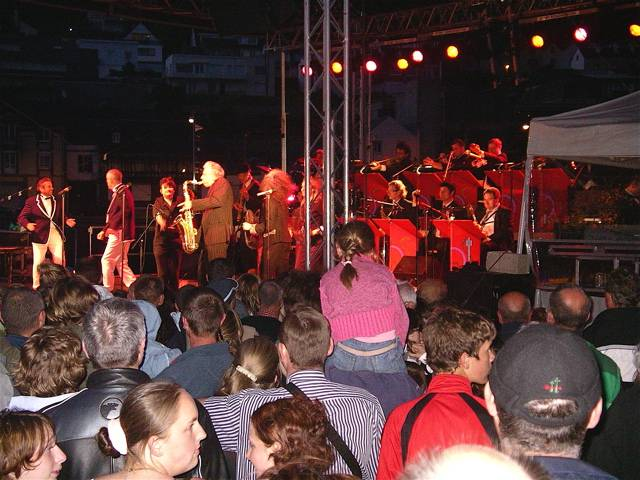
Après le banquet, l'orchestre du Splendid au grand complet est là. C'est parfait et bien léché, mais la musique big-band est moins entraînante quand même...

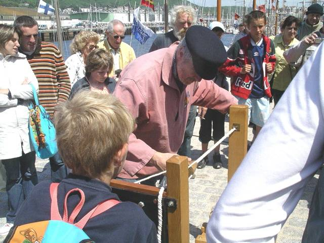
Bon, dodo, il pleuvra pas mal dans la nuit. Le matin, je refais un tour au village... Un spécialiste montre comment on fabrique les cordages toronnés, avec une machine de démonstration simple...

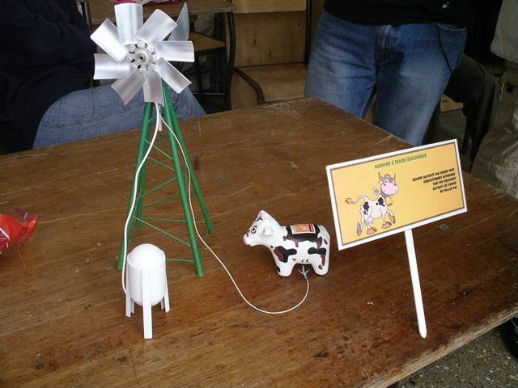
Bruno Tondellier a créé pour Thierry et ses petites vaches ce modèle exclusif et écologique de trayeuse mue par l'énergie éolienne...

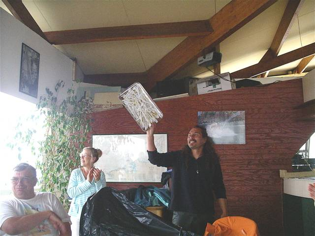
A midi, il flotte, on va déjeuner dans la Capitainerie, merci aux navigateurs. En récompense de ses prestations échevelées d'hier soir, très appréciées par la mairie, Yves reçoit de Thierry le Prix du meilleur Banquettiste...

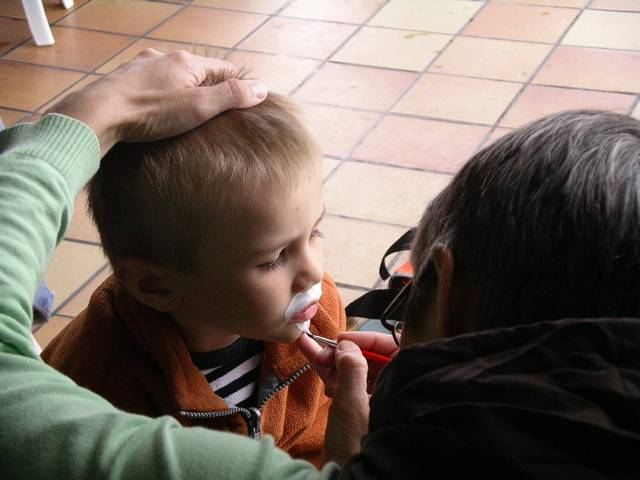
Même dans la salle, les distractions ne manquent pas, le maquillage artistique se poursuit !

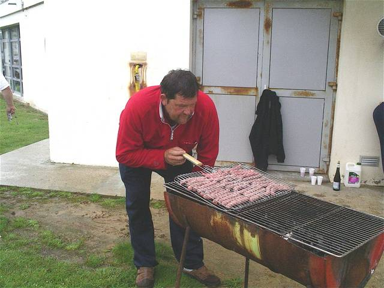
Pendant ce temps, Thierry allume le barbecue sous la pluie en soufflant... Avec son coffre, dix litres à chaque fois, ca prend vite !

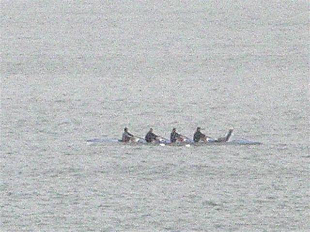
Au loin, des masochistes rament dans une barque de course marine à quatre rameurs et un barreur...

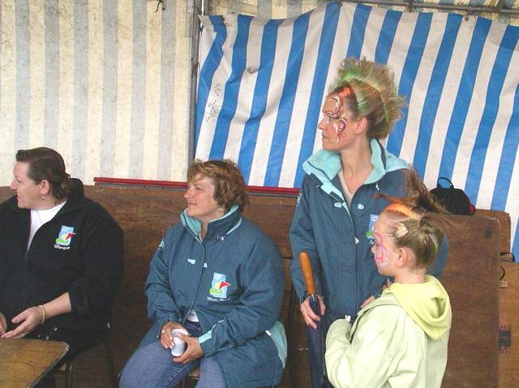
Pas que les enfants, Sylvie s'est fait maquiller aussi, avec un résultat extraordinaire... Maquiller et coiffer, l'ensemble est très beau...

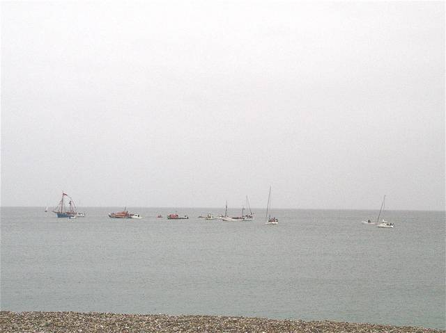
Cette année, la bénédiction des bateaux ne se fait pas en mer, mais dans le bassin. Beaucoup sortent quand même et feront sonner les sirènes en choeur...

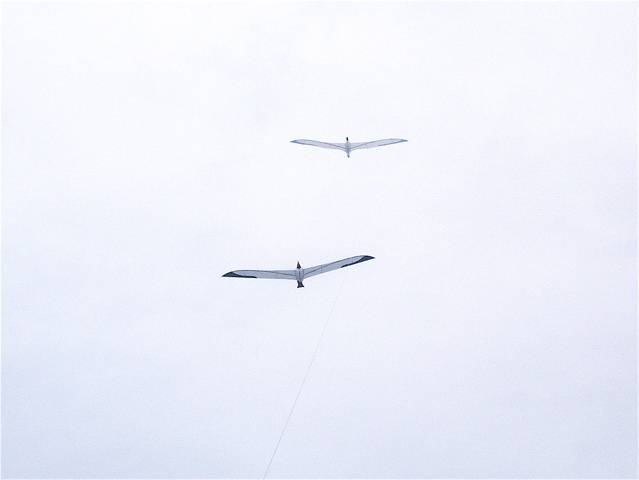
Pour participer, Jean-Marc et moi avons sorti nos Albatros et volons au-dessus du chenal et de leurs têtes quand ils rentrent !

Pour terminer, ceux qui restent sont invités dans la salle du club. Splendide salle, très vaste, et avec beaucoup de matériel, une grande table, des machines à coudre professionnelles, etc...

Jean Muguet avait préparé un nouveau trophée, un beau Lecornu à étagères. Mais le concours n'a pas eu lieu, la faute aux conditions météo... Jean doit être déçu, t'en fais pas, il n'est pas perdu, va !

Finalement, on termine en dînant, il reste au moins 2 jours de provisions à finir, on n'y arrivera pas... En point d'orgue, Thierry nous gratifie de pleins de cadeaux : sacs, vaches, T-shirts, arrêtez, le camion va craquer !
Je dors à la plage, mais le matin, l'Expert ne démarre pas ! Heureusement, j'arrête in extremis Jean-Marc qui partait et on pourra démarrer la bête, merci à lui. Bilan : un joint de culasse à changer, mais je rentrerai quand même à la maison sans problème.
Conclusion : météo pas très favorable, cette année, mais un cadre fabuleux et une ambiance terrible. L'équipe en fait toujours un peu plus que ce qu'on attendrait, et ça la met en joie ! Nous aussi !